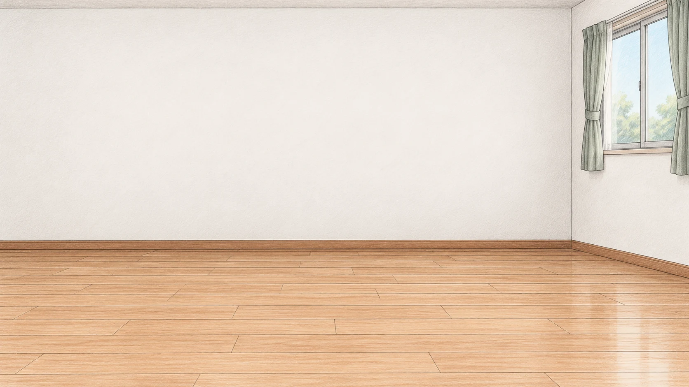

奶牛猫大作战 · 美术素材 v1
Moo Cat Mayhem · 希小乐 · 18 个猫姿态 · 分层家具与人物
素材说明
定位清单
前景遮挡层
定位点
白熊场景围观
看电视 · 轻敲爸爸脑袋
衣柜 · 叼走毛领
沙发底下 · 探头埋伏
拯救毛线团 · 铃铛与羽毛引猫
白熊的脸 · 被围观后停爪
小猫姿态 · 512 × 512 · 共同定位点 (256, 448)
家具与道具
人物 · 各自使用清单内的座面定位点
空房间背景
